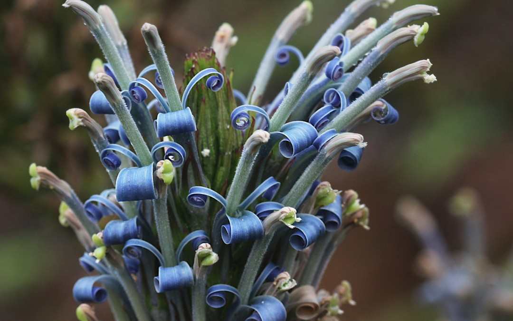

Radiação Adaptativa
Processo onde uma espécie ancestral se diversifica rapidamente em várias novas espécies para ocupar diferentes nichos.
1. Origem
Colonização de novos ambientes com recursos disponíveis e sem competição significativa.
2. Diversificação
Populações se isolam e adaptam-se a nichos específicos.
3. Seleção Natural
Variações genéticas favoráveis são selecionadas, gerando diferenças morfológicas.
4. Especiação
Isolamento reprodutivo resulta na formação de novas espécies.
Exemplos Clássicos

Tentilhões de Darwin
Nas Galápagos, bicos se especializaram para diferentes alimentos.

Ciclídeos Africanos
Evoluíram centenas de formas de boca e cores nos Grandes Lagos.

Lobelioides Havaianos
Mais de 125 espécies adaptadas a diferentes microclimas.